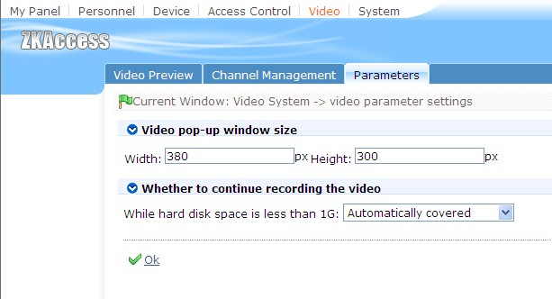

Video parameter Settings, to video pop-up box size and video disk space is insufficient processing mode Settings.

Video pop-up window size:
Set pop-up box long and wide, including real-time monitoring video pop-up dialog box, report page video video playback pop-up dialog box.
Whether to continue recording the video:
Software in the video linkage video, will automatically judge the current video file save the path in the rest of the hard disk space size, When less than 1 g, users can choose to be automatic cover or video, if choose the automatic cover, the software will be the first to delete the first 100 video files, continue to video. Otherwise, will not record video.